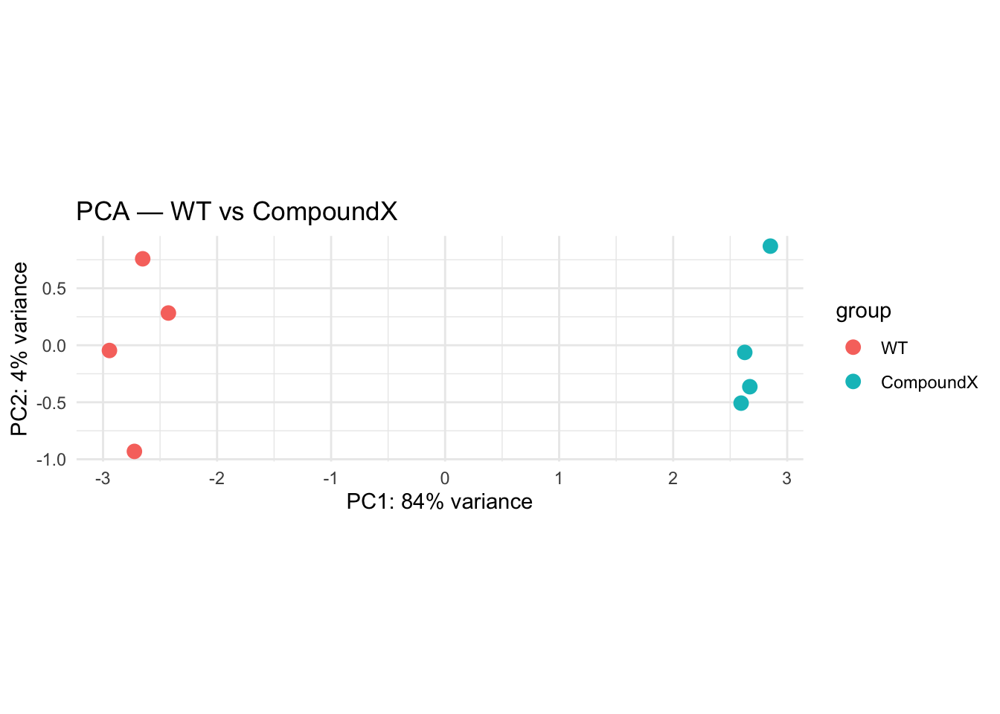
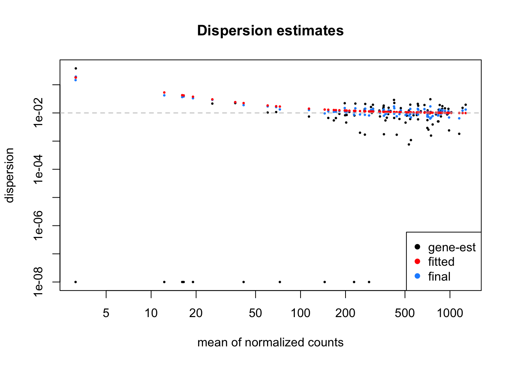
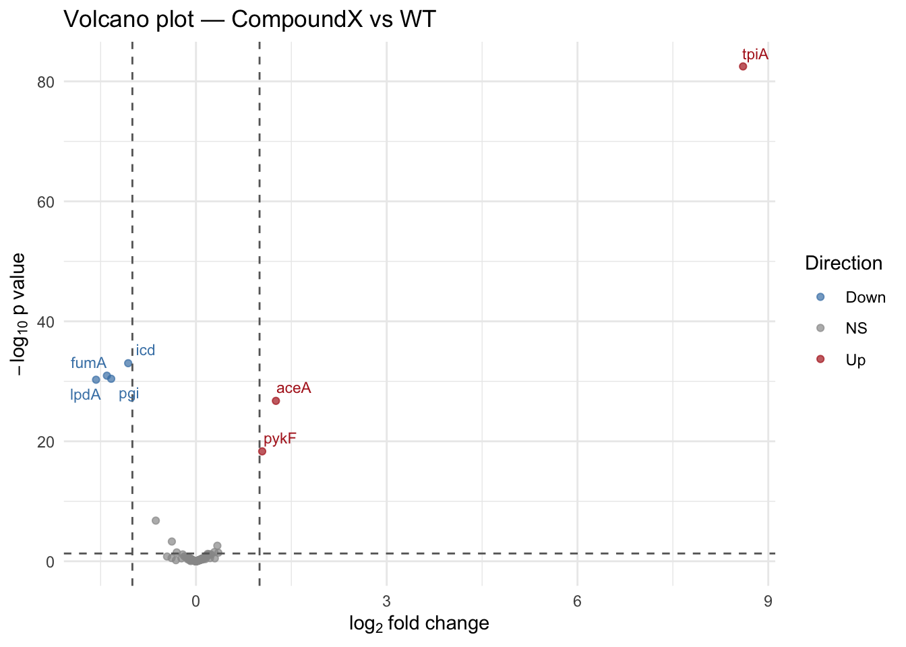

library(tidyverse)
library(DESeq2)
library(pheatmap)
library(ggrepel)Tutorial: DESeq2 Analysis on Synthetic Data
Introduction
In this tutorial we perform a standard DESeq2 differential expression analysis on the synthetic bulk RNA-seq data generated in the previous tutorial. We will:
- Load the count table and sample metadata
- Create a DESeq2 dataset and run the analysis
- Inspect the data with a PCA plot
- Examine the dispersion–mean relationship
- Extract the results table of differentially expressed genes (DEGs)
- Visualise the results with a volcano plot
1 — Load the data
We read in the count matrix and metadata that were exported in the data-generation tutorial.
# Count matrix — first column becomes row names
count_data <- read.table("data_frozen/count_table.tsv",
sep = "\t",
header = TRUE,
row.names = 1,
check.names = FALSE)
# Sample metadata
col_data <- read.table("data_frozen/sample_metadata.tsv",
sep = "\t",
header = TRUE)
# DESeq2 requires the row names of colData to match the column names of the counts
rownames(col_data) <- col_data$sample
# Make sure condition is a factor with WT as the reference level
col_data$condition <- factor(col_data$condition, levels = c("WT", "CompoundX"))
head(count_data) WT.rep1 WT.rep2 WT.rep3 WT.rep4 CompoundX.rep1 CompoundX.rep2
aceA 619 523 520 453 1454 1213
pykF 859 824 926 600 1505 1560
gltA 439 335 411 465 361 525
crs 1 6 2 4 5 2
tpiA 5 5 0 1 1022 1013
icd 1596 1688 1430 1589 725 761
CompoundX.rep3 CompoundX.rep4
aceA 1196 1079
pykF 1742 1651
gltA 386 465
crs 0 5
tpiA 1109 1042
icd 751 709col_data sample condition
WT.rep1 WT.rep1 WT
WT.rep2 WT.rep2 WT
WT.rep3 WT.rep3 WT
WT.rep4 WT.rep4 WT
CompoundX.rep1 CompoundX.rep1 CompoundX
CompoundX.rep2 CompoundX.rep2 CompoundX
CompoundX.rep3 CompoundX.rep3 CompoundX
CompoundX.rep4 CompoundX.rep4 CompoundX2 — Create the DESeqDataSet and run DESeq2
DESeqDataSetFromMatrix ties together the count matrix and the metadata. The design formula ~ condition tells DESeq2 we want to test for differences between WT and CompoundX.
dds <- DESeqDataSetFromMatrix(countData = round(count_data),
colData = col_data,
design = ~ condition)converting counts to integer mode# Run the full DESeq2 pipeline:
# estimation of size factors, dispersion, and model fitting
dds <- DESeq(dds)estimating size factorsestimating dispersionsgene-wise dispersion estimatesmean-dispersion relationshipfinal dispersion estimatesfitting model and testing3 — PCA plot
A Principal Component Analysis gives us a quick overview of how the samples cluster. We expect the WT and CompoundX samples to separate along one of the principal components.
We use the variance-stabilising transformation (vst) since the dispersion (variability) depends on the mean gene expression, which would bias the PCA.
# Normally, you'd use (for many genes)
# vsd <- vst(dds, blind = FALSE)
# Now, we'll use:
vsd <- varianceStabilizingTransformation(dds, blind = FALSE)
plotPCA(vsd, intgroup = "condition") +
theme_minimal() +
ggtitle("PCA — WT vs CompoundX")
4 — Dispersion estimates
DESeq2 models each gene’s dispersion (variability) as a function of its mean expression. It is generally observed in RNA-seq data that the dispersion changes with different mean values. The plot below shows the trend in the “dispersion estimate”. The vst() function (or it’s equivalent for very little data varianceStabilizingTransformation()) tries to estimate and counter that trend.
# What DESeq2 does
plotDispEsts(dds, main = "Dispersion estimates")
# The actual dispersion that we generated the data with
abline(h = 1/100, lty = 2, col = "grey")
DESeq2 uses dispersion estimates (determined for each gene) in two ways;
- When we use
plotPCA(vst(dds))to generate a PCA plot, the PCA will work with a count table where variance is stabilised across genes, such that each gene contributes equally to the PCA. - Later, when statistical testing is performed, the dispersion is taken along in the model fitting, which is important for accurate p-values and fold-change estimates.
The difference between dispersion and variance
The dispersion estimate in DESeq2 is somewhat complicated. Technically, they assume: \[ \text{var}(K) = \mu + \alpha \cdot \mu^2 \]
With K (multiple observations of) counts of a gene, \(\mu\) the gene mean and \(\alpha\) the gene’s “dispersion estimate”.
This is based on the assumption that the counts follow a Negative Binomial distribution, for which this relationship between variance and the mean exists.
The dispersion estimate can thus be calculated as follows \[ \alpha = \frac{\text{var}(K) - \mu}{\mu^2} \]
Which is the dispersion value that is shown in the plot from plotDispEsts().
How well does this model fit our generated data?
In our previous section, we generated data with a specific dispersion coefficient, \(\alpha=1/100\). So our generated data is a-typical, all genes should have the same dispersion coeffient \(\alpha\), independent of their mean values.
I’ve added the grey dotted line to show that in the plot above. We can see that the data (black dots) indeed adhere that line. However, DESeq2 thinks that the relationship (red dots) shows higher dispersion values for low-expressed genes. So for our limited generated data, it does not do a fantastic job. This will work pretty well for real data though.
5 — Results table
DESeq2 will fit our design (a formula describing the expected effect of our condition) to each gene, taking into account the normalization (size factors) and the dispersion estimates, and perform a Wald statistical test to determine whether the observed differences between conditions are significant. In fact, this was already done when we executed dds <- DESeq(dds).
We can now extract the results for the contrast CompoundX vs WT. Key columns are:
| Column | Meaning |
|---|---|
log2FoldChange |
log₂ fold-change (CompoundX / WT) |
pvalue |
raw p-value from the Wald test |
padj |
Benjamini–Hochberg adjusted p-value |
res <- results(dds, contrast = c("condition", "CompoundX", "WT"))
# Order by adjusted p-value
res_ordered <- res[order(res$padj), ]
# Show the top DEGs
head(as.data.frame(res_ordered), 20) baseMean log2FoldChange lfcSE stat pvalue padj
tpiA 531.11232 8.6033942 0.44515131 19.326898 3.190289e-83 3.222192e-81
icd 1153.23723 -1.0660109 0.08803978 -12.108287 9.546669e-34 4.821068e-32
fumA 386.06860 -1.4006530 0.11962343 -11.708851 1.148252e-31 3.865782e-30
pgi 638.26932 -1.3331399 0.11484813 -11.607851 3.759475e-31 9.492674e-30
lpdA 203.58012 -1.5711915 0.13571818 -11.576868 5.398227e-31 1.090442e-29
aceA 887.37363 1.2572245 0.11577739 10.858981 1.807548e-27 3.042706e-26
pykF 1214.24092 1.0414131 0.11676477 8.918898 4.709513e-19 6.795154e-18
hk101 1274.04131 -0.6319374 0.12073755 -5.233976 1.659021e-07 2.094514e-06
nrs43 733.35381 -0.3792122 0.10907955 -3.476473 5.080547e-04 5.701503e-03
nrs46 856.87853 0.3361610 0.11140885 3.017363 2.549842e-03 2.575340e-02
nrs19 172.43631 0.2893714 0.13272169 2.180287 2.923619e-02 2.684413e-01
nrs70 422.22360 -0.3030245 0.14218185 -2.131246 3.306889e-02 2.783298e-01
nrs42 72.70014 0.3512124 0.16863174 2.082718 3.727691e-02 2.896129e-01
nrs74 765.82623 0.1837207 0.09714909 1.891122 5.860811e-02 4.228157e-01
nrs40 599.55904 0.2038266 0.11083524 1.839005 6.591438e-02 4.239881e-01
nrs79 167.04751 0.2359519 0.13277830 1.777037 7.556223e-02 4.239881e-01
nrs94 212.19392 0.2325089 0.13084063 1.777039 7.556185e-02 4.239881e-01
nrs97 926.13609 -0.2084775 0.11555024 -1.804216 7.119751e-02 4.239881e-01
nrs25 440.31826 0.1646958 0.10146402 1.623194 1.045479e-01 5.325442e-01
nrs28 743.27325 0.1805669 0.11153213 1.618967 1.054543e-01 5.325442e-01# How many genes pass padj < 0.05?
summary(res, alpha = 0.05)
out of 101 with nonzero total read count
adjusted p-value < 0.05
LFC > 0 (up) : 4, 4%
LFC < 0 (down) : 6, 5.9%
outliers [1] : 0, 0%
low counts [2] : 0, 0%
(mean count < 3)
[1] see 'cooksCutoff' argument of ?results
[2] see 'independentFiltering' argument of ?resultsThe padj p value is the value you’ll want to look at (as addressed in the questions below).
6 — Volcano plot
A volcano plot shows statistical significance (−log₁₀ adjusted p-value) on the y-axis against effect size (log₂ fold-change) on the x-axis. Genes that are both statistically significant and have a large fold-change appear in the top-left and top-right corners.
# Convert results to a data frame for ggplot
df_volcano <- as.data.frame(res) %>%
rownames_to_column("Gene") %>%
mutate(
significant = case_when(
is.na(padj) ~ "NS",
padj < 0.05 & log2FoldChange > 1 ~ "Up",
padj < 0.05 & log2FoldChange < -1 ~ "Down",
TRUE ~ "NS"
)
)
# Top 5 up-regulated and top 5 down-regulated genes (by padj)
df_volcano_top <- df_volcano %>%
filter(significant %in% c("Up", "Down")) %>%
group_by(significant) %>%
slice_min(padj, n = 5) %>%
ungroup()
# Make the plot
ggplot(df_volcano, aes(x = log2FoldChange, y = -log10(pvalue), colour = significant)) +
geom_point(alpha = 0.7, size = 1.5) +
scale_colour_manual(values = c("Up" = "firebrick", "Down" = "steelblue", "NS" = "grey60")) +
geom_hline(yintercept = -log10(0.05), linetype = "dashed", colour = "grey40") +
geom_vline(xintercept = c(-1, 1), linetype = "dashed", colour = "grey40") +
geom_text_repel(data = df_volcano_top, aes(label = Gene),
size = 3, max.overlaps = 20, show.legend = FALSE) +
theme_minimal() +
labs(title = "Volcano plot — CompoundX vs WT",
x = expression(log[2]~fold~change),
y = expression(-log[10]~p~value),
colour = "Direction")
Questions
We used generated data for this tutorial. These were the details we put in:
| Gene | WT_reads | CompoundX_reads | Regulation |
|---|---|---|---|
| aceA | 500 | 1200 | Up |
| pykF | 800 | 1600 | Up |
| gltA | 400 | 410 | Up |
| crs | 3 | 5 | Up |
| tpiA | 3 | 1000 | Up |
| icd | 1500 | 700 | Down |
| pgi | 900 | 400 | Down |
| fumA | 600 | 200 | Down |
| lpdA | 300 | 100 | Down |
| zwf | 20 | 15 | Down |
| nrsX | 1..1000* | idem | None |
_*) 1..1000 is a random number between 1 and 1000, equal for both conditions._
Now answer the following questions
- Look at the results table,
res_ordered:- When we look at the p-values column, ie
pvalue, we see many genes with significant p-values. How come many of the “nrs” genes are also considered significant when we look atpvalue?- What is p-value correction?
- Does this succeed completely in its aim?
- Why are not all genes that we know are DE not included in this list? (E.g. our key transcription factor crs.)
- What is our false discovery rate? And what is our power?
- When we look at the p-values column, ie
- Look at the Volcano plot:
- Can you link each of the genes in the table with true values above to the Volcano plot?
- Select all significant genes, for example
padj<0.05fromres_ordered. Can you explain this? - Select a gene, and make a plot of its expression values, perhaps look into some genes that show behavior you expected and did not expect (if any).